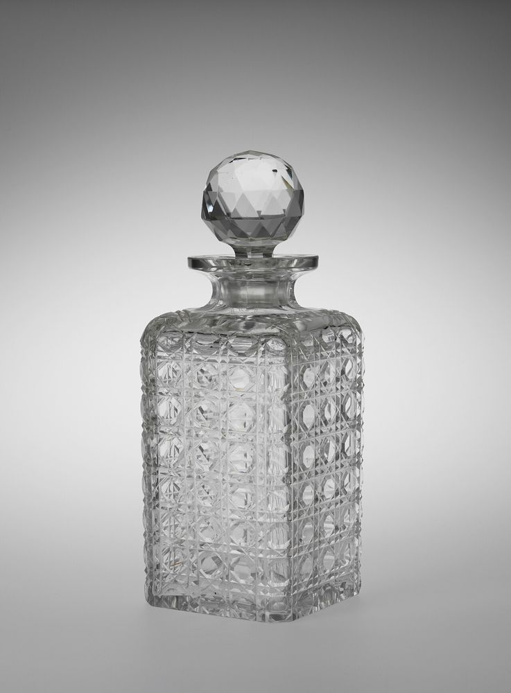
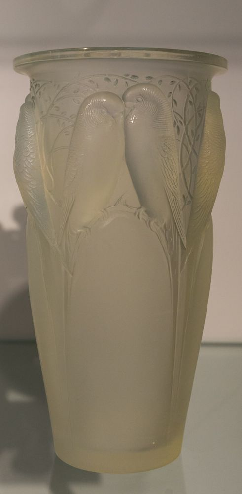
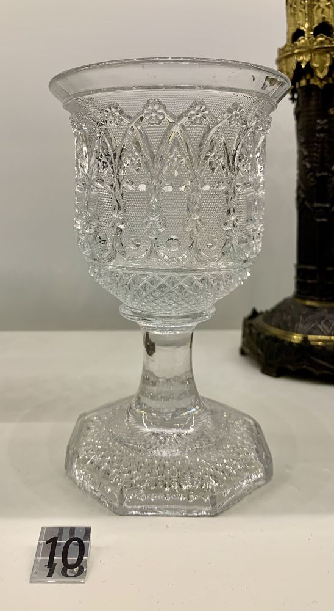
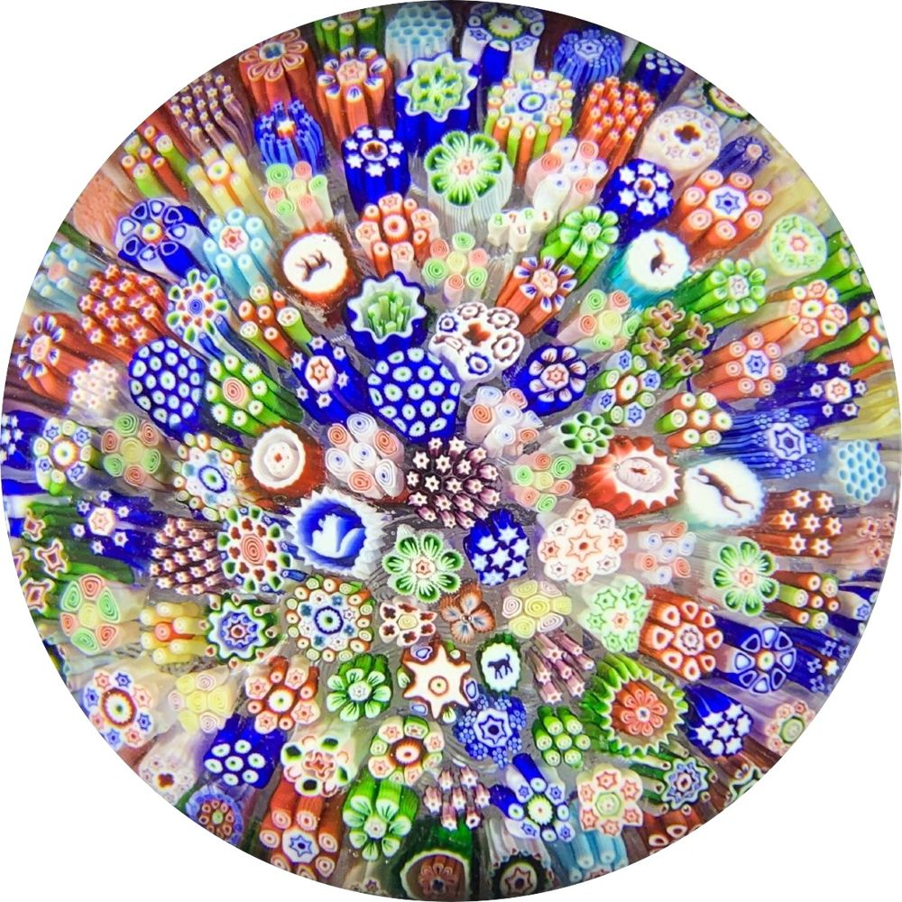

Confidentialité
Votre identité et le contenu de votre collection restent strictement privés.
Expertise indépendante · gratuite et sans engagement
Baccarat, Saint-Louis, Lalique, Daum, Gallé… Envoyez quelques photos : nous estimons vos pièces, nous vous répondons rapidement et nous vous proposons un rachat au comptant, en toute discrétion.

Nos engagements
Votre identité et le contenu de votre collection restent strictement privés.
Une estimation argumentée par un expert, gratuite et sans attente inutile.
Emballage professionnel et acheminement assuré, à notre charge.
Pour les collections importantes, nous venons chez vous.
Règlement comptant dès la remise de vos pièces.
Domaines d'expertise
Des cristalleries royales aux ateliers de l'Art nouveau et de l'Art déco : chaque signature a son histoire, ses marques et son marché.
Le cristal des cours et des palais : services de verres, carafes, lustres et pièces monumentales. Marque gravée à l'acide.
Depuis 1586Plus ancienne cristallerie de France : modèles Tommy, Thistle, Bubbles, boules presse-papier.
Depuis 1888René Lalique et ses héritiers : vases, statuettes et flacons en verre moulé-pressé, opalescent ou dépoli.
Nancy, 1878Pâte de verre, verre gravé et cameo : vases Art nouveau et Art déco signés Daum Nancy.
Belgique, 1826Cristal taillé belge réputé : carafes, services et vases Art déco aux tailles profondes.
Nancy, 1884Émile Gallé, maître de l'Art nouveau : vases multicouches dégagés à l'acide, signatures en réserve.
Épinay-sur-Seine, 1913Verreries Art déco aux couleurs vives : vases « Ovington », « Le Verre Français », coupes et lampes.
Et aussiCristal de Sèvres, Lorraine, Bohême, Murano d'époque… Envoyez-nous vos photos.
Simple et rapide
Remplissez le formulaire en ligne et joignez quelques clichés : vue d'ensemble, détails de taille, dessous du pied et signature.
Un expert identifie la manufacture, la période et l'état, puis vous répond rapidement avec une valeur détaillée.
Si notre proposition vous convient, nous organisons le retrait ou le transport assuré et vous réglons immédiatement.
Galerie
Carafes, vases, verres à pied, presse-papiers… voici le type de pièces qui retiennent toute notre attention.




Exemples de pièces de musées et de collections. Envoyez-nous vos photos pour estimer les vôtres.
« Une réponse claire et rapide, avec le détail de chaque pièce du service. Très rassurant. »
« Ils se sont déplacés pour mes vases. Emballage soigné et règlement à la remise. »
« Aucune pression, de vrais conseils pour identifier mes signatures. Je recommande. »
Quelques photos suffisent. Estimation gratuite, réponse rapide, aucune obligation de vendre.